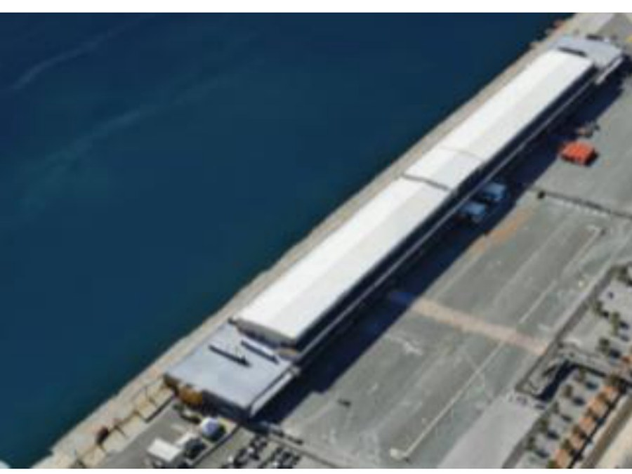

光伏储能系统设计
PV + BESS / System Design
珀斯港口光伏及储能系统设计 PV and Battery Energy Storage System Design for Perth Harbour
在 4 人团队中负责 939 kWp 光伏（Photovoltaic，PV）系统与电池储能系统（Battery Energy Storage System，BESS，理想装机容量 1164.8 kWh，有效可用容量 931.8 kWh）的设计与经济分析，目标是解决西澳大利亚高电价地区的峰值负荷问题。 In a four-person team, I contributed to the design and economic analysis of a 939 kWp PV system with a 1164.8 kWh nominal BESS (931.8 kWh usable capacity), targeting peak-load challenges in a high-electricity-price area of Western Australia.
- 使用光伏仿真软件 PVsyst V8.0.7 完成 3D 建模与损失分析，近端遮挡损失约 0.9%，整体性能比（Performance Ratio，PR）达 67.29%。 Used PVsyst V8.0.7 for 3D modelling and loss analysis; near-shading loss ~0.9%, overall Performance Ratio (PR) 67.29%.
- 完成 1.20 直流/交流功率比（DC/AC 比）优化设计，项目内部收益率（Internal Rate of Return，IRR）达 30.83%，平准化度电成本（Levelized Cost of Energy，LCOE）为 £0.1112/kWh。 Optimised the DC/AC ratio to 1.20; project IRR reached 30.83% and LCOE was calculated at £0.1112/kWh.
- 配置 1708 块双面半切单晶硅组件（550 Wp）与 26 台组串逆变器，论证储能系统对削峰填谷与电网支撑的作用，太阳能保障率（Solar Fraction，SF）达 97.78%。 Configured 1708 bifacial half-cell mono modules (550 Wp each) and 26 string inverters; demonstrated BESS value for peak shaving and grid support, achieving a Solar Fraction (SF) of 97.78%.